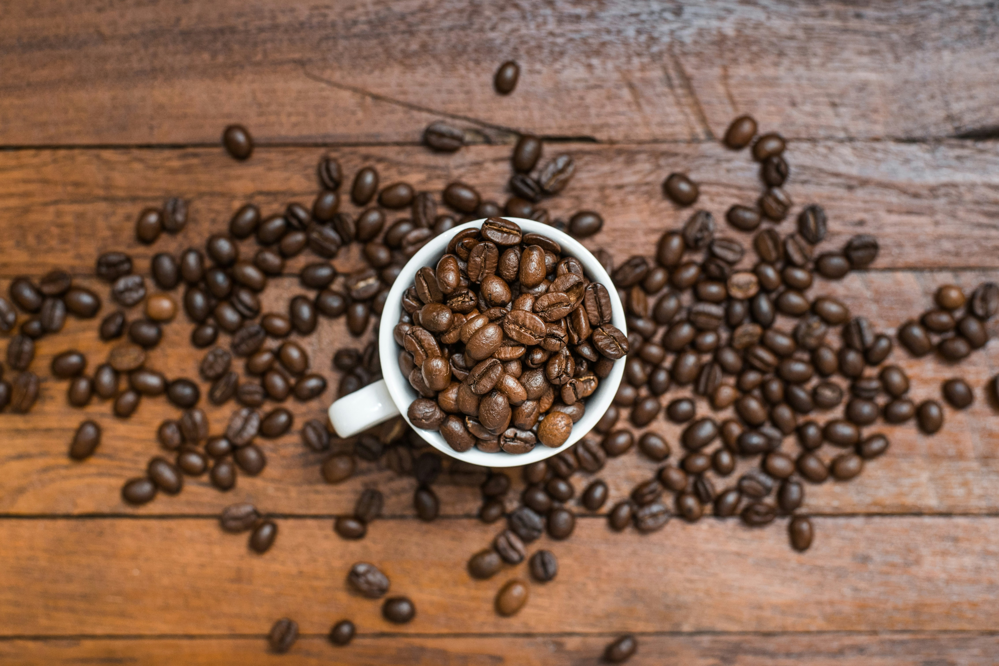
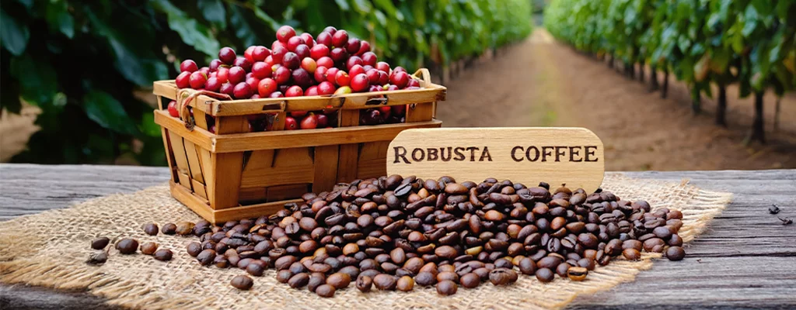
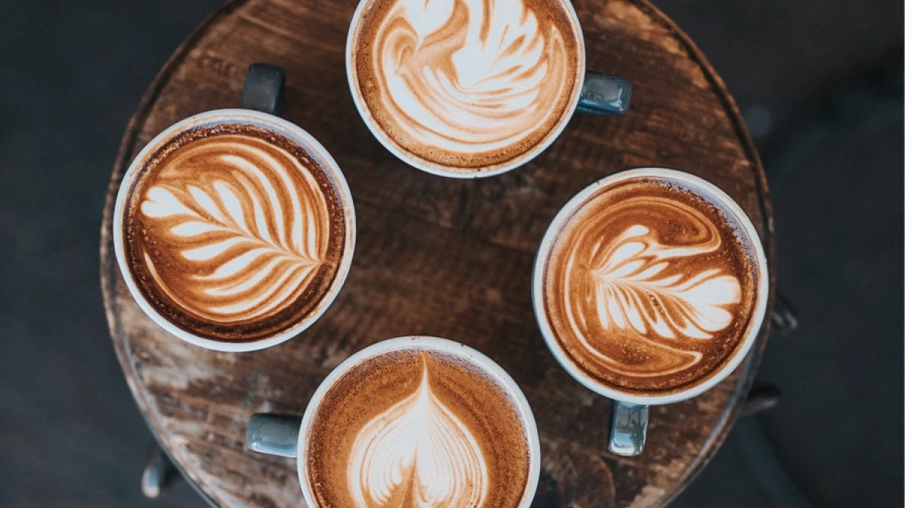

El estilo de la dolce vita, conocida por su estética sofisticada y elegante, refleja el glamour y la moda propia de la década de 1960 en Italia. A medida que diseñadores y fabricantes textiles retomaron su labor, sus lucidos diseños respondieron a una necesidad de glamour frente a la privación en tiempos de guerra.

Esta especie procedente de Etiopía y con varias subespecies tiende a ser delicada y a proporcionar un grano con un sabor muy aromático y una cantidad considerable pero menor a la otra variedad existente en cuanto a nivel de cafeína. Pese a su origen africano en la actualidad suele ser más cultivado en los países de Sudamérica, Asia y Centroamérica.

Si bien tiende a ser menos utilizado a nivel general, esta variedad posee la importante característica de tener un nivel mucho más elevado de cafeína que el anterior, algo que provoca que el sabor que produce a la hora de beberse sea mucho más intenso. y con tono bastante más amargo.

Una gran parte de los cafés que nos tomamos no proceden únicamente de una de las dos especies anteriores y sus variedades, sino que por lo general nos encontramos ante una mezcla en diferentes proporciones de ambas. La proporción exacta puede depender entre otras cosas del tipo de elaboración que se pretende realizar.